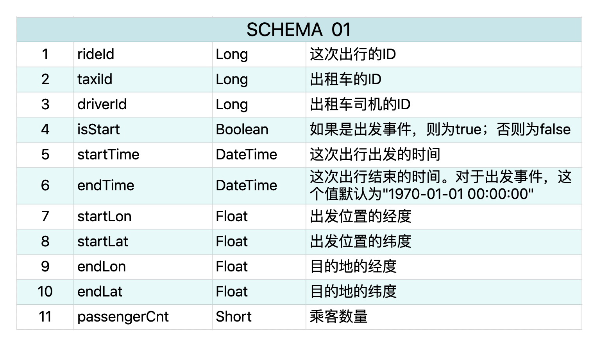
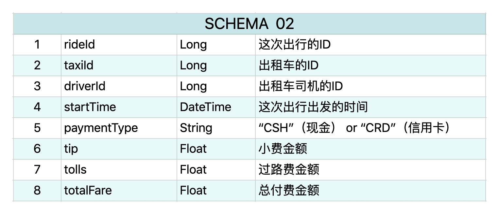

- 00 开篇词 从这里开始，带你走上硅谷一线系统架构师之路.md
- 01 为什么MapReduce会被硅谷一线公司淘汰？.md
- 02 MapReduce后谁主沉浮：怎样设计下一代数据处理技术？.md
- 03 大规模数据处理初体验：怎样实现大型电商热销榜？.md
- 04 分布式系统（上）：学会用服务等级协议SLA来评估你的系统.md
- 05 分布式系统（下）：架构师不得不知的三大指标.md
- 06 如何区分批处理还是流处理？.md
- 07 Workflow设计模式：让你在大规模数据世界中君临天下.md
- 08 发布_订阅模式：流处理架构中的瑞士军刀.md
- 09 CAP定理：三选二，架构师必须学会的取舍.md
- 10 Lambda架构：Twitter亿级实时数据分析架构背后的倚天剑.md
- 11 Kappa架构：利用Kafka锻造的屠龙刀.md
- 12 我们为什么需要Spark？.md
- 13 弹性分布式数据集：Spark大厦的地基（上）.md
- 14 弹性分布式数据集：Spark大厦的地基（下）.md
- 15 Spark SQL：Spark数据查询的利器.md
- 16 Spark Streaming：Spark的实时流计算API.md
- 17 Structured Streaming：如何用DataFrame API进行实时数据分析_.md
- 18 Word Count：从零开始运行你的第一个Spark应用.md
- 19 综合案例实战：处理加州房屋信息，构建线性回归模型.md
- 20 流处理案例实战：分析纽约市出租车载客信息.md
- 21 深入对比Spark与Flink：帮你系统设计两开花.md
- 22 Apache Beam的前世今生.md
- 23 站在Google的肩膀上学习Beam编程模型.md
- 24 PCollection：为什么Beam要如此抽象封装数据？.md
- 25 Transform：Beam数据转换操作的抽象方法.md
- 26 Pipeline：Beam如何抽象多步骤的数据流水线？.md
- 27 Pipeline IO Beam数据中转的设计模式.md
- 28 如何设计创建好一个Beam Pipeline？.md
- 29 如何测试Beam Pipeline？.md
- 30 Apache Beam实战冲刺：Beam如何run everywhere_.md
- 31 WordCount Beam Pipeline实战.md
- 32 Beam Window：打通流处理的任督二脉.md
- 33 横看成岭侧成峰：再战Streaming WordCount.md
- 34 Amazon热销榜Beam Pipeline实战.md
- 35 Facebook游戏实时流处理Beam Pipeline实战（上）.md
- 36 Facebook游戏实时流处理Beam Pipeline实战（下）.md
- 37 5G时代，如何处理超大规模物联网数据.md
- 38 大规模数据处理在深度学习中如何应用？.md
- 39 从SQL到Streaming SQL：突破静态数据查询的次元.md
- 40 大规模数据处理未来之路.md
- FAQ第一期 学习大规模数据处理需要什么基础？.md
- FAQ第三期 Apache Beam基础答疑.md
- FAQ第二期 Spark案例实战答疑.md
- 加油站 Practice makes perfect！.md
- 结束语 世间所有的相遇，都是久别重逢.md
20 流处理案例实战：分析纽约市出租车载客信息
你好，我是蔡元楠。
今天我要与你分享的主题是“流处理案例实战：分析纽约市出租车载客信息”。
在上一讲中，我们结合加州房屋信息的真实数据集，构建了一个基本的预测房价的线性回归模型。通过这个实例，我们不仅学习了处理大数据问题的基本流程，而且还进一步熟练了对RDD和DataFrame API的使用。
你应该已经发现，上一讲的实例是一个典型的批处理问题，因为处理的数据是静态而有边界的。今天让我们来一起通过实例，更加深入地学习用Spark去解决实际的流处理问题。
相信你还记得，在前面的章节中我们介绍过Spark两个用于流处理的组件——Spark Streaming和Structured Streaming。其中Spark Streaming是Spark 2.0版本前的的流处理库，在Spark 2.0之后，集成了DataFrame/DataSet API的Structured Streaming成为Spark流处理的主力。
今天就让我们一起用Structured Streaming对纽约市出租车的载客信息进行处理，建立一个实时流处理的pipeline，实时输出各个区域内乘客小费的平均数来帮助司机决定要去哪里接单。
数据集介绍
今天的数据集是纽约市2009～2015年出租车载客的信息。每一次出行包含了两个事件，一个事件代表出发，另一个事件代表到达。每个事件都有11个属性，它的schema如下所示：

这部分数据有个不太直观的地方，那就是同一次出行会有两个记录，而且代表出发的事件没有任何意义，因为到达事件已经涵盖了所有必要的信息。现实世界中的数据都是这样复杂，不可能像学校的测试数据一样简单直观，所以处理之前，我们要先对数据进行清洗，只留下必要的信息。
这个数据还包含有另外一部分信息，就是所有出租车的付费信息，它有8个属性，schema如下所示。

这个数据集可以从网上下载到，数据集的规模在100MB左右，它只是节选了一部分出租车的载客信息，所以在本机运行就可以了。详细的纽约出租车数据集超过了500GB，同样在网上可以下载，感兴趣的同学可以下载来实践一下。
流数据输入
你可能要问，这个数据同样是静态、有边界的，为什么要用流处理？
因为我们手里没有实时更新的流数据源。我也没有权限去公开世界上任何一个上线产品的数据流。所以，这里只能将有限的数据经过Kafka处理，输出为一个伪流数据，作为我们要构建的pipeline的输入。
在模块二中，我们曾经初步了解过Apache Kafka，知道它是基于Pub/Sub模式的流数据处理平台。由于我们的专栏并不涉及Apache Kafka的具体内容，所以我在这里就不讲如何把这个数据输入到Kafka并输出的细节了。你只要知道，在这个例子中，Consumer是之后要写的Spark流处理程序，这个消息队列有两个Topic，一个包含出行的地理位置信息，一个包含出行的收费信息。Kafka会按照时间顺序，向这两个Topic中发布事件，从而模拟一个实时的流数据源。
相信你还记得，写Spark程序的第一步就是创建SparkSession对象，并根据输入数据创建对应的RDD或者DataFrame。你可以看下面的代码。
from pyspark.sql import SparkSession
spark = SparkSession.builder
.appName("Spark Structured Streaming for taxi ride info")
.getOrCreate()
rides = spark
.readStream
.format("kafka")
.option("kafka.bootstrap.servers", "localhost:xxxx") //取决于Kafka的配置
.option("subscribe", "taxirides")
.option("startingOffsets", "latest")
.load()
.selectExpr("CAST(value AS STRING)")
fares = spark
.readStream
.format("kafka")
.option("kafka.bootstrap.servers", "localhost:xxxx")
.option("subscribe", "taxifares")
.option("startingOffsets", "latest")
.load()
.selectExpr("CAST(value AS STRING)
在这段代码里，我们创建了两个Streaming DataFrame，并订阅了对应的Kafka topic，一个代表出行位置信息，另一个代表收费信息。Kafka对数据没有做任何修改，所以流中的每一个数据都是一个长String，属性之间是用逗号分割的。
417986,END,2013-01-02 00:43:52,2013-01-02 00:39:56,-73.984528,40.745377,-73.975967,40.765533,1,2013007646,2013007642
数据清洗
现在，我们要开始做数据清洗了。要想分离出我们需要的位置和付费信息，我们首先要把数据分割成一个个属性，并创建对应的DataFrame中的列。为此，我们首先要根据数据类型创建对应的schema。
ridesSchema = StructType([
StructField("rideId", LongType()), StructField("isStart", StringType()),
StructField("endTime", TimestampType()), StructField("startTime", TimestampType()),
StructField("startLon", FloatType()), StructField("startLat", FloatType()),
StructField("endLon", FloatType()), StructField("endLat", FloatType()),
StructField("passengerCnt", ShortType()), StructField("taxiId", LongType()),
StructField("driverId", LongType())])
faresSchema = StructType([
StructField("rideId", LongType()), StructField("taxiId", LongType()),
StructField("driverId", LongType()), StructField("startTime", TimestampType()),
StructField("paymentType", StringType()), StructField("tip", FloatType()),
StructField("tolls", FloatType()), StructField("totalFare", FloatType())])
接下来，我们将每个数据都用逗号分割，并加入相应的列。
def parse_data_from_kafka_message(sdf, schema):
from pyspark.sql.functions import split
assert sdf.isStreaming == True, "DataFrame doesn't receive streaming data"
col = split(sdf['value'], ',')
for idx, field in enumerate(schema):
sdf = sdf.withColumn(field.name, col.getItem(idx).cast(field.dataType))
return sdf.select([field.name for field in schema])
rides = parse_data_from_kafka_message(rides, ridesSchema)
fares = parse_data_from_kafka_message(fares, faresSchema)
在上面的代码中，我们定义了函数parse_data_from_kafka_message，用来把Kafka发来的message根据schema拆成对应的属性，转换类型，并加入到DataFrame的表中。
正如我们之前提到的，读入的数据包含了一些无用信息。
首先，所有代表出发的事件都已被删除，因为到达事件已经包含了出发事件的所有信息，而且只有到达之后才会付费。
其次，出发地点和目的地在纽约范围外的数据，也可以被删除。因为我们的目标是找出纽约市内小费较高的地点。DataFrame的filter函数可以很容易地做到这些。
MIN_LON, MAX_LON, MIN_LAT, MAX_LAT = -73.7, -74.05, 41.0, 40.5
rides = rides.filter(
rides["startLon"].between(MIN_LON, MAX_LON) &
rides["startLat"].between(MIN_LAT, MAX_LAT) &
rides["endLon"].between(MIN_LON, MAX_LON) &
rides["endLat"].between(MIN_LAT, MAX_LAT))
rides = rides.filter(rides["isStart"] == "END")
上面的代码中首先定义了纽约市的经纬度范围，然后把所有起点和终点在这个范围之外的数据都过滤掉了。最后，把所有代表出发事件的数据也移除掉。
当然，除了前面提到的清洗方案，可能还会有别的可以改进的地方，比如把不重要的信息去掉，例如乘客数量、过路费等，你可以自己思考一下。
Stream-stream Join
我们的目标是找出小费较高的地理区域，而现在收费信息和地理位置信息还在两个DataFrame中，无法放在一起分析。那么要用怎样的方式把它们联合起来呢？
你应该还记得，DataFrame本质上是把数据当成一张关系型的表。在我们这个例子中，rides所对应的表的键值（Key）是rideId，其他列里我们关心的就是起点和终点的位置；fares所对应的表键值也是rideId，其他列里我们关心的就是小费信息（tips）。
说到这里，你可能会自然而然地想到，如果可以像关系型数据表一样，根据共同的键值rideId把两个表inner join起来，就可以同时分析这两部分信息了。但是这里的DataFrame其实是两个数据流，Spark可以把两个流Join起来吗？
答案是肯定的。在Spark 2.3中，流与流的Join（Stream-stream join）被正式支持。这样的Join难点就在于，在任意一个时刻，流数据都不是完整的，流A中后面还没到的数据有可能要和流B中已经有的数据Join起来再输出。为了解决这个问题，我们就要引入数据水印（Watermark）的概念。
数据水印定义了我们可以对数据延迟的最大容忍限度。
比如说，如果定义水印是10分钟，数据A的事件时间是1:00，数据B的事件时间是1:10，由于数据传输发生了延迟，我们在1:15才收到了A和B，那么我们将只处理数据B并更新结果，A会被无视。在Join操作中，好好利用水印，我们就知道什么时候可以不用再考虑旧数据，什么时候必须把旧数据保留在内存中。不然，我们就必须把所有旧数据一直存在内存里，导致数据不断增大，最终可能会内存泄漏。
在这个例子中，为什么我们做这样的Join操作需要水印呢？
这是因为两个数据流并不保证会同时收到同一次出行的数据，因为收费系统需要额外的时间去处理，而且这两个数据流是独立的，每个都有可能产生数据延迟。所以要对时间加水印，以免出现内存中数据无限增长的情况。
那么下一个问题就是，究竟要对哪个时间加水印，出发时间还是到达时间？
前面说过了，我们其实只关心到达时间，所以对rides而言，我们只需要对到达时间加水印。但是，在fares这个DataFrame里并没有到达时间的任何信息，所以我们没法选择，只能对出发时间加水印。因此，我们还需要额外定义一个时间间隔的限制，出发时间和到达时间的间隔要在一定的范围内。具体内容你可以看下面的代码。
faresWithWatermark = fares
.selectExpr("rideId AS rideId_fares", "startTime", "totalFare", "tip")
.withWatermark("startTime", "30 minutes")
ridesWithWatermark = rides
.selectExpr("rideId", "endTime", "driverId", "taxiId", "startLon", "startLat", "endLon", "endLat")
.withWatermark("endTime", "30 minutes")
joinDF = faresWithWatermark
.join(ridesWithWatermark,
expr("""
rideId_fares = rideId AND
endTime > startTime AND
endTime <= startTime + interval 2 hours
""")
在这段代码中，我们对fares和rides分别加了半小时的水印，然后把两个DataFrame根据rideId和时间间隔的限制Join起来。这样，joinDF就同时包含了地理位置和付费信息。
接下来，就让我们开始计算实时的小费最高区域。
计算结果并输出
到现在为止，我们还没有处理地点信息。原生的经纬度信息显然并没有很大用处。我们需要做的是把纽约市分割成几个区域，把数据中所有地点的经纬度信息转化成区域信息，这样司机们才可以知道大概哪个地区的乘客比较可能给高点的小费。
纽约市的区域信息以及坐标可以从网上找到，这部分处理比较容易。每个接收到的数据我们都可以判定它在哪个区域内，然后对joinDF增加一个列“area”来代表终点的区域。现在，让我们假设area已经加到现有的DataFrame里。接下来我们需要把得到的信息告诉司机了。
还记得第16讲和第17讲中提到的滑动窗口操作吗？这是流处理中常见的输出形式，即输出每隔一段时间内，特定时间窗口的特征值。在这个例子中，我们可以每隔10分钟，输出过去半小时内每个区域内的平均小费。这样的话，司机可以每隔10分钟查看一下数据，决定下一步去哪里接单。这个查询（Query）可以由以下代码产生。
tips = joinDF
.groupBy(
window("endTime", "30 minutes", "10 minutes"),
"area")
.agg(avg("tip"))
最后，我们把tips这个流式DataFrame输出。
query.writeStream
.outputMode("append")
.format("console")
.option("truncate", False
.start()
.awaitTermination()
你可能会问，为什么我们不可以把输出结果按小费多少进行排序呢？
这是因为两个流的inner-join只支持附加输出模式（Append Mode），而现在Structured Streaming不支持在附加模式下进行排序操作。希望将来Structured Streaming可以提供这个功能，但是现在，司机们只能扫一眼所有的输出数据来大概判断哪个地方的小费最高了。
小结
流处理和批处理都是非常常见的应用场景，而且相较而言流处理更加复杂，对延迟性要求更高。今天我们再次通过一个实例帮助你了解要如何利用Structured Streaming对真实数据集进行流处理。Spark最大的好处之一就是它拥有统一的批流处理框架和API，希望你在课下要进一步加深对DataSet/DataFrame的熟练程度。
思考题
今天的主题是“案例实战”，不过我留的是思考题，而不是实践题。因为我不确定你是否会使用Kafka。如果你的工作中会接触到流数据，那么你可以参考今天这个案例的思路和步骤来解决问题，多加练习以便熟悉Spark的使用。如果你还没有接触过流数据，但却想往这方面发展的话，我就真的建议你去学习一下Kafka，这是个能帮助我们更好地做流处理应用开发和部署的利器。
现在，来说一下今天的思考题吧。
- 为什么流的Inner-Join不支持完全输出模式?
- 对于Inner-Join而言，加水印是否是必须的？ Outer-Join呢？
欢迎你把答案写在留言区，与我和其他同学一起讨论。
如果你觉得有所收获，也欢迎把文章分享给你的朋友。
© 2019 - 2023 Liangliang Lee. Powered by gin and hexo-theme-book.